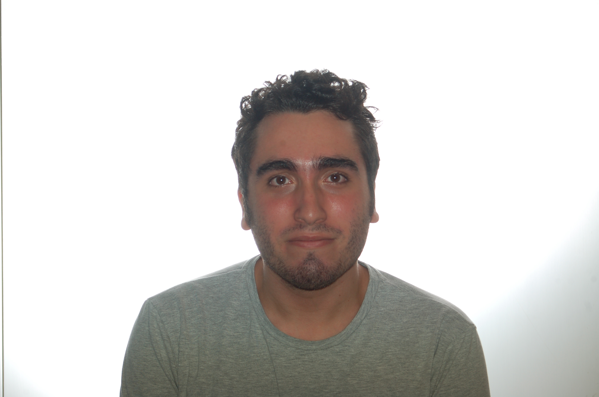

SPINELLI MARCO

Future Web Developer!
Summary:
Highly motivated in learning the basis of general programming to total expertise of Web developing.
I'm hopefull even for learning other programming languages in the future.
Education:
I graduated in Florence(Italy) at the Aurelio Saffi High School as a Receptionist.
Nothing related to the programming unfortunately.
This passion grew later but i'm more than motivated in learning!
Work History:
April 2023-June 2024:
- Sales assistant for ODSTORE.
- Complete al the selling operations.
- Refill the products.
- Cleaning.
End of june 2022-January 2023:
- Room Attendant for WTB(Why The Best Hotels).
- Serving the clients during breakfast.
- Cleaning tables and the entire working area after service.
July 2020-February-2021
- Sales assistant for Dufrital SPA.
- Complete al the selling operations.
- Refill the products.
- Cleaning.
Skills:
- HTML5
- CSS
- Javascript
Certifications:
- Responsive Web Dedign.
- Javascript algorithm and Data Structure.
- Front End Development Libraries.
Other: